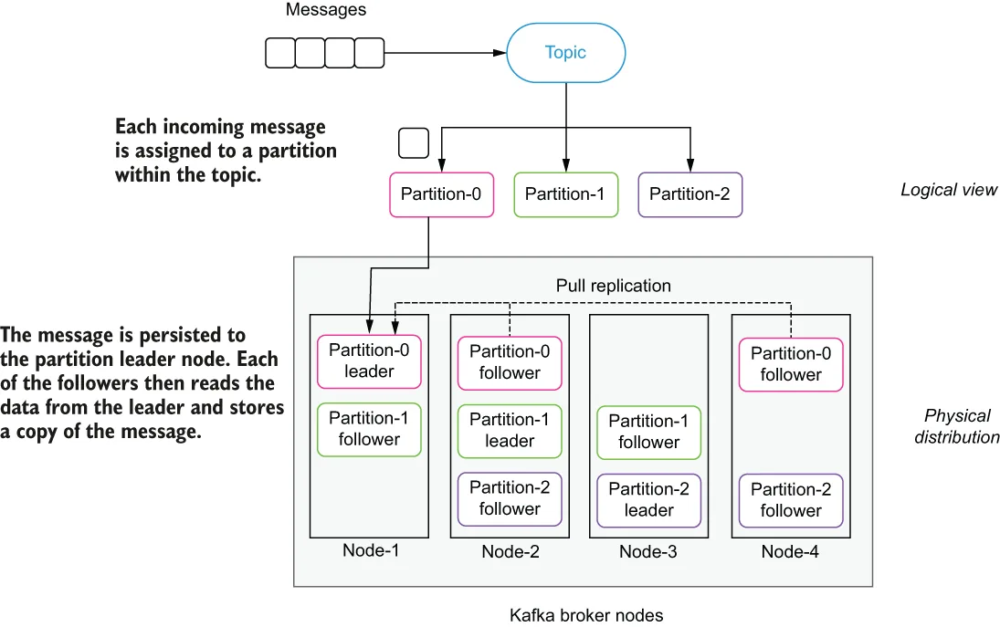
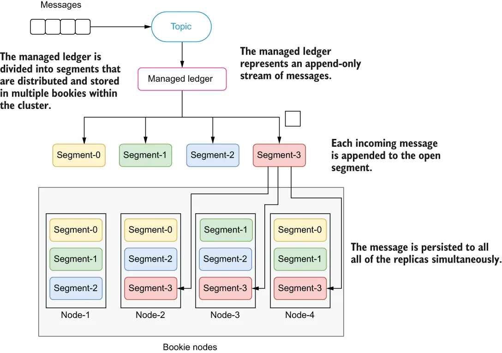

Within the context of messaging systems, the term data durability refers to the guarantees that messages that have been acknowledged by the system will survive even in the event of a system failure. In a distributed system with many nodes, such as Pulsar or Kafka, failures can occur at many levels; therefore, it is important to understand how the data is stored and what durability guarantees the system provides.
在消息系统的语境中，数据持久性指的是这样一种保证：已被系统确认接收的消息，即便在系统发生故障的情况下也不会丢失。在 Pulsar 或 Kafka 这样拥有众多节点的分布式系统中，故障可能发生在多个层面上；因此，理解数据是如何存储的、以及系统提供了什么样的持久性保证，就显得尤为重要。
When a producer publishes a message, an acknowledgment is returned from the message system to indicate that the message on the topic was received. This acknowledgment signals to the producer that the message is safe, and that the producer can discard it without worrying about it getting lost. As we shall see, the strength of these guarantees is much greater in Pulsar than Kafka.
当生产者发布一条消息时，消息系统会返回一个确认，表明该主题上的消息已被接收。这个确认向生产者表明：消息是安全的，生产者可以丢弃它而不必担心丢失。正如我们将看到的，Pulsar 的这类保证要比 Kafka 强得多。
Data durability in Kafka
Kafka 中的数据持久性
As we discussed earlier, Apache Kafka takes a partition-centric storage approach to message storage. In order to ensure data durability, multiple replicas of each partition are maintained within a cluster to provide a configurable level of data redundancy.
正如我们前面讨论过的，Apache Kafka 对消息存储采取以分区为中心的方式。为了确保数据持久性，集群内会为每个分区维护多个副本，以提供可配置级别的数据冗余。

\Figure 1.18 Kafka’s partition replication mechanism
图 1.18 Kafka 的分区复制机制
When Kafka receives an incoming message, a hashing function is applied to the message to determine which of the topic’s partitions the message should be written to. Once that has been determined, the message contents are written to the page cache (not the disk) of the partition leader replica. Once the message has been acknowledged by the leader, each of the follower replicas are responsible for retrieving the message contents from the partition leader in a pull manner (i.e., they act as consumers and read the messages from the leader), as shown in figure 1.18. This overall approach is what is referred to as an eventually consistent strategy in which there is one node in a distributed system that has the most recent view of the data, which is eventually communicated to other nodes until they all achieve a consistent view of the data. While this approach has the advantage of decreasing the amount of time required to store an incoming message, it also introduces two opportunities for data loss; first, in the event of a power outage or other process termination event on the leader node, any data that was written to the page cache that had not been persisted to local disk will be lost. The second opportunity for data loss is when the current leader process fails and another one of the remaining followers is selected as the new leader. In the leader failover scenario, any messages that were acknowledged by the previous leader but not yet replicated to the newly elected leader replica will be lost as well.
当 Kafka 收到一条传入消息时，会对该消息应用一个哈希函数，以确定它应该被写入主题的哪个分区。一旦确定，消息内容会被写入该分区 leader 副本的页缓存（而非磁盘）。消息被 leader 确认之后，各个 follower 副本负责以拉取的方式从分区 leader 获取消息内容（即它们充当消费者，从 leader 读取消息），如图 1.18 所示。这种整体做法被称为最终一致性策略：分布式系统中有某一个节点拥有数据的最新视图，该视图最终会传递给其他节点，直到所有节点都达成一致的数据视图。虽然这种做法的优点是减少了存储传入消息所需的时间，但它也引入了两种数据丢失的可能：其一，如果 leader 节点发生断电或其他进程终止事件，任何已写入页缓存但尚未持久化到本地磁盘的数据都会丢失。其二，当当前 leader 进程失败、并从剩余的 follower 中选出新的 leader 时，也会发生数据丢失。在 leader 故障转移的场景下，任何已被前一个 leader 确认、但尚未复制到新当选 leader 副本的消息同样会丢失。
By default, messages are acknowledged once the leader has written it to memory. However, this behavior can be overridden to withhold the acknowledgment until all of the replicas have received a copy of the message. This does not impact the underlying replication mechanism in which the followers must pull the information across the network and send a response back to the leader. Obviously, this behavior will incur a performance penalty, which is often hidden in most published Kafka performance benchmarks, so you are advised to do your own performance testing with this configuration in order to get a better understanding of what the expected performance will be.
默认情况下，消息在 leader 将其写入内存后即被确认。不过，这一行为可以被覆盖，改为在所有副本都收到消息副本之后才返回确认。这并不影响底层的复制机制——follower 仍然必须通过网络拉取信息，并向 leader 回送响应。显然，这种行为会带来性能损失，而这一点在大多数公开的 Kafka 性能基准测试中往往被隐藏了，因此建议你使用该配置自行进行性能测试，以便更好地了解预期的性能表现。
The other side effect of this replication strategy is that only the leader replica can serve both producers and consumers, as it is the only one guaranteed to have the most recent and correct copy of the data. All of the follower replicas are passive nodes that cannot alleviate any of the load from the leader during traffic spikes.
这种复制策略的另一个副作用是：只有 leader 副本能够同时为生产者和消费者提供服务，因为它是唯一被保证拥有最新且正确数据副本的节点。所有 follower 副本都是被动节点，在流量高峰期间无法为 leader 分担任何负载。
Data durability in Pulsar
Pulsar 中的数据持久性
When Pulsar receives an incoming message, it saves a copy in memory and also writes the data to a write-ahead log (WAL), which is forced onto disk before an acknowledgment is sent back to the message publisher, as shown in figure 1.19. This approach is modelled after traditional database atomicity, consistency, isolation, and durability (ACID) transaction semantics, which ensures that the data is not lost even if the machine fails and comes back online in the future.
当 Pulsar 收到一条传入消息时，它会在内存中保存一份拷贝，同时把数据写入预写日志（WAL），并且该日志会在向消息发布者返回确认之前被强制刷到磁盘上，如图 1.19 所示。这种做法借鉴了传统数据库原子性、一致性、隔离性与持久性（ACID）的事务语义，确保即使机器发生故障并在日后重新上线，数据也不会丢失。

\Figure 1.19 Pulsar’s replication occurs when the message is initially written to the topic.
图 1.19 Pulsar 的复制发生在消息最初写入主题的时候。
The number of replicas required for a topic can be configured in Pulsar based on your data replication needs, and Pulsar guarantees that the data that has been received and acknowledged by a quorum of servers before an acknowledgment is sent to the producer. This design ensures that data can only be lost in the highly unlikely event of simultaneous fatal errors occurring on all bookie nodes to which the data was written. This is why is it recommended to distribute the bookie nodes across multiple regions and use rack-aware placement policies to ensure a copy of the data is stored in more than one region or data center.
主题所需的副本数量可以在 Pulsar 中根据你的数据复制需求进行配置，并且 Pulsar 保证：在向生产者返回确认之前，数据已被一个 quorum 的服务器接收并确认。这种设计确保只有在极不可能发生的情况下——即写入数据的所有 bookie 节点同时发生致命错误——数据才会丢失。这正是为什么建议把 bookie 节点分布在多个区域，并使用机架感知的放置策略，以确保数据的一份副本被存放在不止一个区域或数据中心。
More importantly, this design eliminates the need for a secondary replication process that is responsible for ensuring that the data is kept in sync between replicas and eliminates any data inconsistency issues due to any lag in the replication process.
更重要的是，这种设计消除了对二级复制过程的需要——即不再需要一个专门负责确保副本之间数据保持同步的过程，也消除了因复制过程中的任何滞后而导致的数据不一致问题。